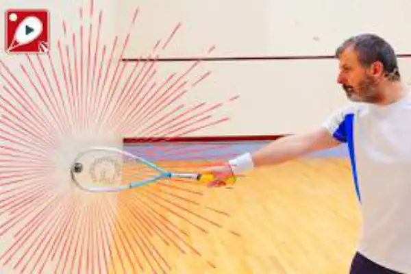

Practical Videos on YouTube
Visit my YouTube channel to see all my videos or if you are feeling adventurous, watch a Random Video!
Recent Videos

Underrated Shots in Squash That Professionals Make Look Easy
13 December 2024Most players don't even know that these shots are super important.

Master Squash Movement With These Simple But Effective Tips
29 November 2024Fast, efficient and effective footwork requires thoughtful practice.

Squash Defence: A Practical Guide To Avoiding Being Dominated
22 November 2024In this video, I show you 5 defensive squash shots that every squash player should be able to play. I explain how to hit the shots and why they are effective.